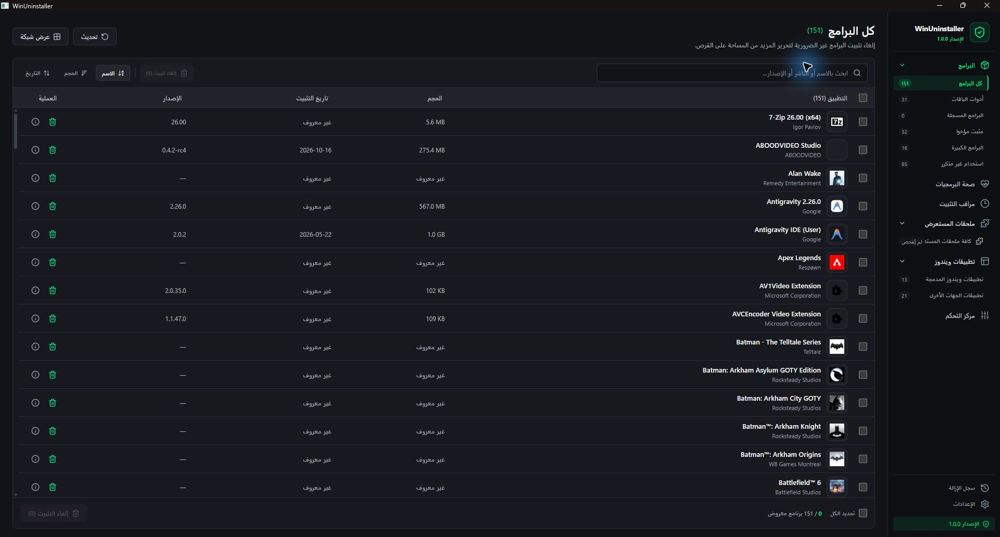
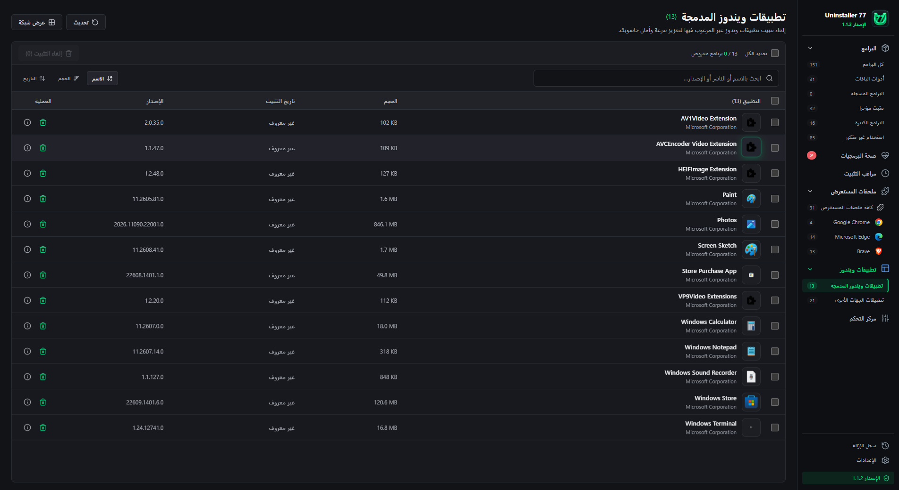
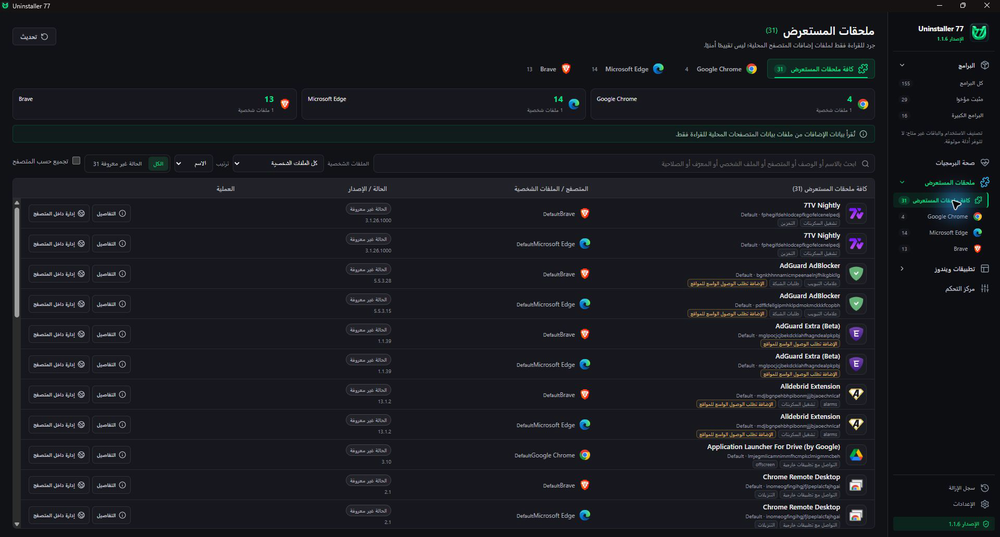
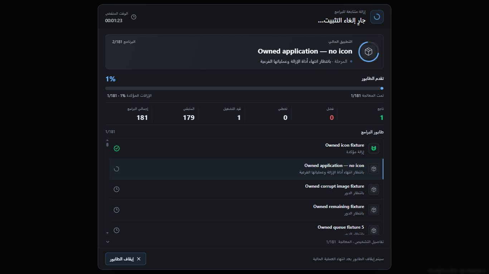
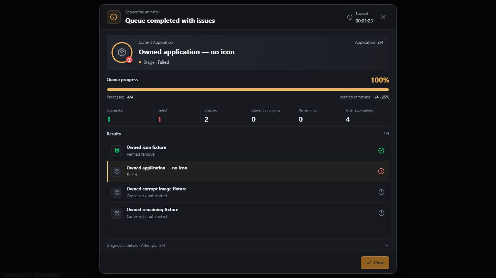
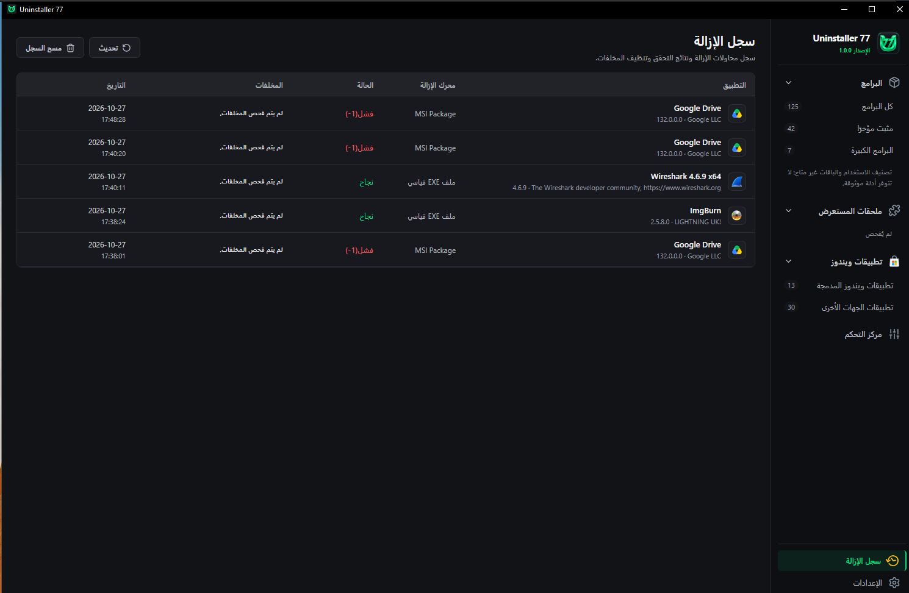
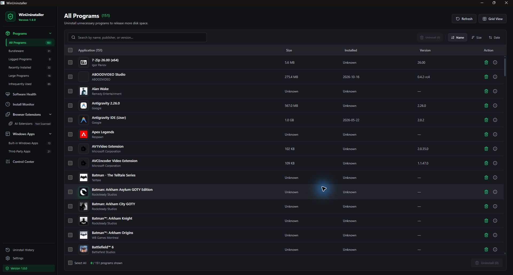
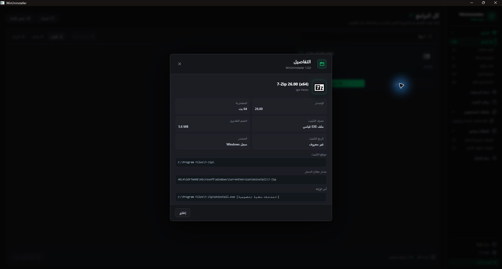

Development capture01Programs · Arabic
Your apps, at a glance
Publisher, version, size and selection together in one list.
Earlier development build. The name, sidebar and some controls have since changed.
Your installed apps, a queue you control, and a clear record of every result. Built for Windows, in English and Arabic.
WATCH THE APP
Watch the supplied product video, then explore individual screens in the gallery.
INSIDE THE APP
Explore programs, packages and browser inventory, then follow an uninstall through to its results. Select any image for a closer look.
Original captures saved during development and testing. Each image identifies its context; some older captures show controls that were later removed. Counts belong to that session and will vary on your PC.

Development capture01Programs · Arabic
Publisher, version, size and selection together in one list.
Earlier development build. The name, sidebar and some controls have since changed.

Development capture02Windows apps
Review Windows package names, publishers and available sizes.
Earlier development build. This capture includes older navigation and controls.

Development capture03Browser extensions
Browser and profile identities stay separate, even for the same extension.
Earlier development build. Browser-management buttons shown here are not offered in v1.0; inventory is read-only.

Fixture preview04Uninstall queue · Arabic
Current stage, elapsed time and item counts in the same view.
Recorded UI preview using owned test fixtures. These are example states, not removals of user software.

Fixture preview05Results · English
Successful, failed and skipped items remain distinct when processing ends.
Recorded UI preview with owned fixtures, showing one success, one failure and two unstarted items.

User test session06Uninstall history
Each application keeps its outcome and timestamp after the queue closes.
User-supplied screenshot from a test session. Historical failures remain recorded after an update.

Development capture07Programs · English
The interface follows the selected language and reading direction.
Earlier development build. Grid View, Software Health and Install Monitor shown here are not in the current release.

Development capture08Application details
Inspect the available installation metadata and registered uninstall command.
Earlier development capture of the application details window; visual details may differ in v1.0.
THE ESSENTIALS, IN ONE PLACE
Review what is installed. Choose what to remove. See what actually happened.
Search and sort registered programs and Windows packages. Review publisher, version, size and the registered uninstall command.
Run the selected apps one at a time. Track each outcome, elapsed time and current stage. Request a stop after the current operation.
Inspect supported leftover locations after verified removal. Eligible reviewed folders can be quarantined, with recovery manifests for restoration.
Inspect Chrome, Edge and Brave extensions by browser and profile, including permissions and detected management policies. Inventory is read-only.
A SIMPLE WORKFLOW
Uninstaller 77 launches the registered vendor uninstaller. Some uninstallers show their own windows or require your input.
Find an app or select several. Check the confirmation before starting.
Respond to the vendor’s prompts when needed. A stop request prevents the next app from starting; it does not force-kill the current uninstaller.
See verified results and per-app diagnostics, then review supported leftovers separately.
VERSION 1.0.1
An English installer. An Arabic or English desktop interface. Source code available under MIT.
Download the installerRelease notes & checksums ↗Prerequisites are not bundled. Setup checks for them before installing application files. Close Uninstaller 77 before updating.
Not for every operation. A system-wide uninstaller may require a Windows UAC prompt. Denying that request is recorded as cancellation; administrator access does not guarantee that every vendor uninstaller will succeed.
It means the queue has finished processing its items. Successful, failed and skipped results remain separate. A failed attempt is not reported as a successful removal.
Version 1.0 inventories local extension data. It does not directly change browser profile files or enable, disable or remove extensions.
The desktop interface and its assets are bundled locally. Uninstaller 77 stores its records locally and does not automatically upload your inventory or operation logs. Third-party uninstallers have their own behavior.